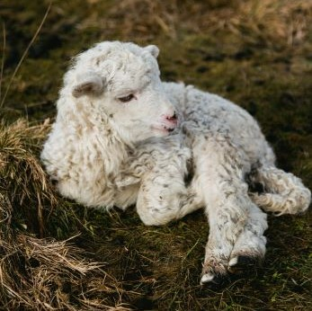

Sheep graze from dawn to dusk and sleep during the night, in a dirunal pattern of activity. From time to time throughout the day, they stop to chew their cud, which is when a portion of their food returns to their mouths from their stomachs to be chewed for the second time.
Sheep are grazing herbivores, and they eat herbaceous plants such as grass, legumes and forbs. They have narrow faces, and can therefore graze very close to the ground and can overgraze a pasture much faster than cattle. Overgrazing can lead to a chain reaction in the soil that decreases its health, because of this, shepherds tend to use rotational grazing, which is when a flock of sheep is rotated through multiple pastures, giving the plants time to recover.
Sheep's grazing patterns can disturb the natural state of the environment, which can make it easier for invasive plants to grow. Homever, sheep can also help control the spread of invasive plants, since they prefer to eat many invasives, which makes them effective at conservational grazing. Research shows that grazing lambs are just as effective at controling winter weeds and insects as herbicides and insecticides.
Sheep are flock animals and when flocking, they have a strong tendency to follow a leader, who might just be the first individual to move. Relationships in flocks differ depending on the sheep, but in general they tend to become stressed when seperated from the flock. In mixed-breed flocks, the relationships aren't as strong, and sub-groups tend to form. It is thought that flocking is defense against predators, as in regions where sheep have no natural predators, none of the native sheep have strong flocking tendencies.

Vocalisations
Sheep make many different sounds such as bleats, grunts, rumbles and snorts. The bleats of different sheep are unique, allowing a mother and her lambs to find each other. Bleating signals distress, frustration, or impatience. A snort signals aggression or a warning, and is often made by startled sheep. When sheep are in pain, they are silent.
A sheep bleating: